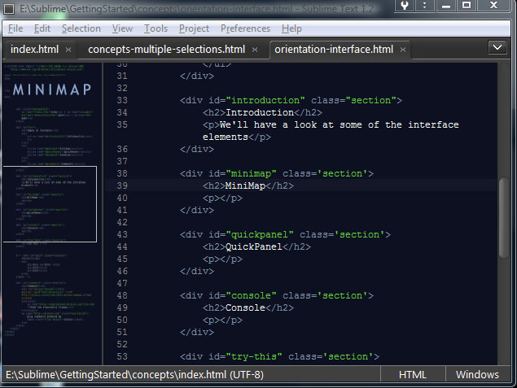
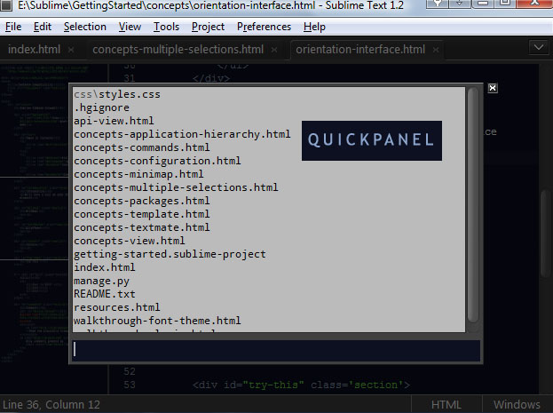
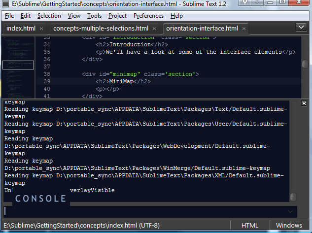

We'll point out some of the interface elements referred to in subsequent sections of this guide.
At the end check out the Try This
section for exercises.

Sublime uses hardware rendering to create a scrollable zoomed out perspective of your code. Along with multiple selections, the mini-map enables an innovative new way of making multiple changes to text at once.

The QuickPanel is an overlay list menu. As you type in words any items
not containing them are filtered from the list. This quick
interface
is used for opening projects file and swapping between open files. It it also
possible to use it with plugin commands.
-ala
-money
file modethe path section of a file is visually indicated with a faded grey color. Search terms will not be matched unless a slash is included as part of the token

The console is where you can see all logging and can interact with Sublime by inputting Python code.
MSwill match
multipleSelection
Comments
blog comments powered by Disqus